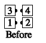
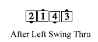
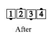
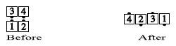

From wherever is appropriate for the "Anything" call: The "Anything" call must have as its final action a Step Thru or Extend. Do all of the "Anything" call, except for the final Step Thru or Extend. For example, in Square Chain Thru to a Wave, the dancers would do all of the call except for stepping forward on the final Turn Thru:
  
Square Thru 3 to a Wave:

Additional applications include Scoot Chain Thru To A Wave, Load the Boat Centers to a Wave, Percolate Outsides to a Wave, Flip Back to a Wave, or Tag Back to a Wave to a Wave.
When used with Tagging Calls Back to a Wave, some callers prefer to say "Centers to a Wave". For example: Flip Back Centers to a Wave, or Tag Back to a Wave Centers to a Wave.
Do not be confused by calls which contain "to a Wave" as part of their name (e.g. Dosado to a Wave, Single Circle to a Wave, Tag Back to a Wave, Cross Roll to a Wave).
© Copyright 1983, 1986-1988, 1995-2017 Bill Davis, John Sybalsky and CALLERLAB Inc., The International Association of Square Dance Callers. Permission to reprint, republish, and create derivative works without royalty is hereby granted, provided this notice appears. Publication on the Internet of derivative works without royalty is hereby granted provided this notice appears. Permission to quote parts or all of this document without royalty is hereby granted, provided this notice is included. Information contained herein shall not be changed nor revised in any derivation or publication.